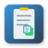

Advanced Clipboard Manager Settings
Back
General Settings
Monitor Clipboard Automatically
Automatically track clipboard changes while browsing
Show Notifications
Display notifications when items are added to clipboard history
Auto-Connect to Server
Automatically connect to the clipboard manager server on startup
Server Settings
Server URL
Test
URL of the Clipboard Manager API server
Click "Test" to check connection
Keyboard Shortcuts
Open Clipboard Manager:
Ctrl+Shift+C
You can change keyboard shortcuts in Chrome's Extensions page by clicking on the "Keyboard shortcuts" link at the bottom.
Configure Shortcuts